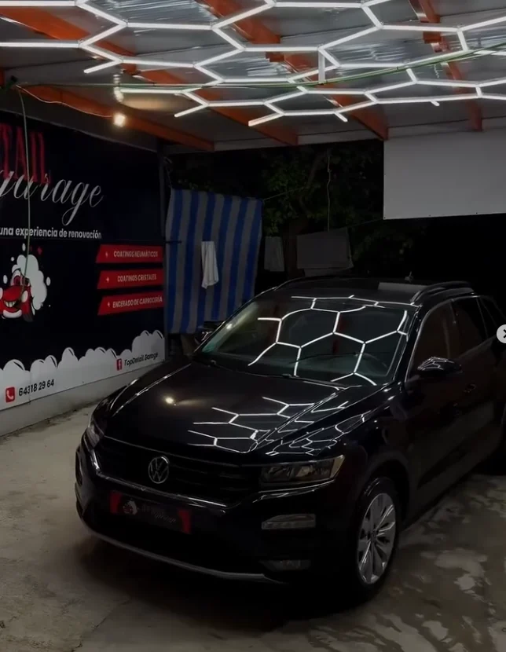
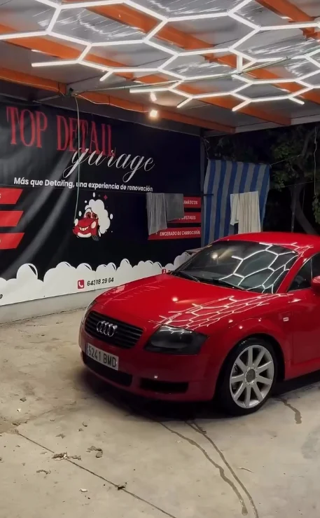
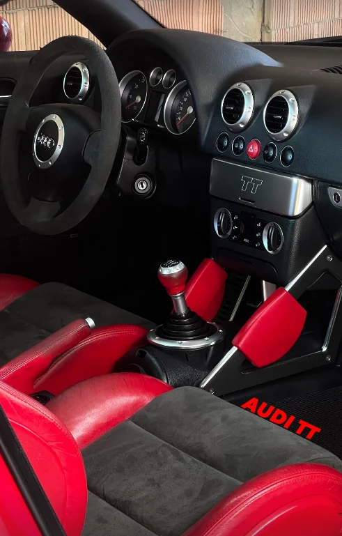
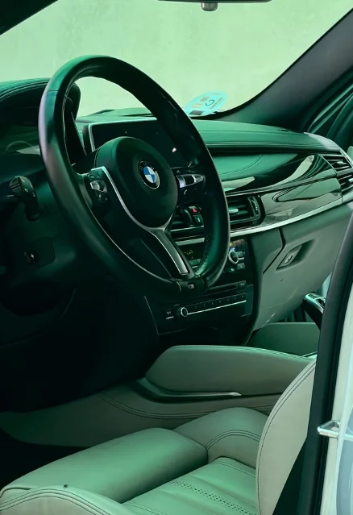
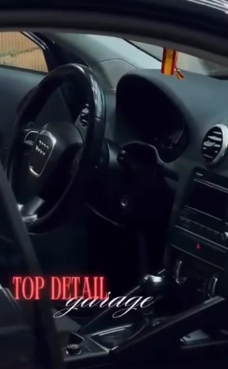
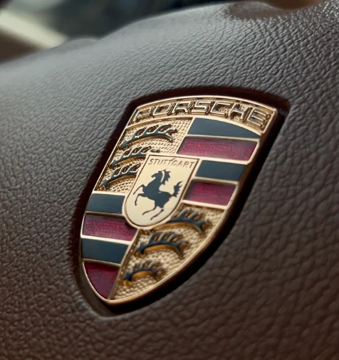

Top Detail
Centro detailing profesional · Cuidado · Corrección · Protección · Seguimiento
Top Detail GarageFernán Núñez · CórdobaEl tallerNuestra filosofía.
No limpiamos coches.
Cuidamos vehículos.
Entendemos que un vehículo es una inversión, una afición y, para muchos, una parte importante de su día a día. Nuestro objetivo no es solo limpiarlo: es conservar su estado, proteger su valor y hacer un seguimiento profesional de su evolución.
ProcesoCómo trabajamos.
- Diagnóstico estéticoRevisamos el estado real de pintura, interior, llantas y cristales antes de tocar nada.
- AsesoramientoTe recomendamos el servicio según el uso, el estado y las necesidades reales del coche. Si llega con suciedad extrema o mucho pelo de mascota, te avisamos antes.
- Trabajo técnicoProductos profesionales y técnicas seguras para limpiar, corregir y proteger cada superficie.
- Top Detail Report™Registramos la intervención, el estado del vehículo y nuestras recomendaciones.
- SeguimientoProgramamos las próximas visitas y seguimos la evolución del estado con el tiempo.
GaleríaTrabajos reales.
Así trabajamos en el taller, coche a coche.






Desliza para ver más →
Pendiente: más fotos de trabajosLo que dicen nuestros clientes.
Opiniones reales de nuestros clientes, en nuestra ficha de Google.
Pendiente: enlace a la ficha de Google y reseñas destacadasPrecios con IVA incluido
Elige el servicio que tu coche merece.Toca «Ver» para verlo en acciónTarifasServicios y precios.
Precios con IVA incluido.
DudasPreguntas frecuentes.
01¿Las limpiezas incluyen el interior?
Sí, las tres. Todas son completas, por dentro y por fuera. La básica no incluye la tapicería; la premium sí, y la integral además limpia moqueta y techo.
02¿Puedo hacer solo el cerámico, sin pulir?
Se puede, pero lo recomendamos después de una corrección: el cerámico sella la pintura tal y como está, con sus remolinos incluidos.
03¿El cerámico hace la pintura inrayable?
No. La protege del sol y la suciedad, la hace más fácil de lavar y le da brillo, pero no evita un arañazo.
04¿Cada cuánto hay que mantener el cerámico?
Un lavado de mantenimiento al mes (solo exterior, 20 €) y el booster cada 6 meses o una vez al año.
05¿Cuánto tarda una limpieza?
Básica, hasta 2 h 30 min; premium, hasta 3 h; integral, hasta 4 h 30 min. Pulidos y cerámicos dependen del estado de la pintura: te lo decimos al ver el coche.
06¿Y si el coche llega muy sucio o con pelo de mascota?
Te avisamos antes de empezar. Lleva más tiempo y un suplemento, y no tocamos nada sin que lo sepas.
07¿Cómo pido cita?
Por WhatsApp o llamando al 643 182 964. Si en un servicio tocas «Añadir a mi cita», el botón de WhatsApp te abre el chat con eso ya escrito.
LimpiezasLas tres son completas.
Básica, premium o integral: todas limpian el coche por dentro y por fuera, al detalle. Lo que cambia es hasta dónde llegamos en el interior.
| Básica70 € | PremiumTop ventas | Integral130 € | |
|---|---|---|---|
| Exterior al detalle | ✓ | ✓ | ✓ |
| Interior al detalle | ✓ | ✓ | ✓ |
| Tapicería de asientos | — | ✓ | ✓ |
| Moqueta y techo | — | — | ✓ |
La básica no incluye la tapicería: si lo que quieres es limpiar los asientos, elige la premium, que desde 100 € es la que más se pide.
PinturaDel problema a la protección.


 Remolinos de lavado
Microarañazos
Brillo apagado
Recreación digital
Remolinos de lavado
Microarañazos
Brillo apagado
Recreación digital
01El problema
Los túneles de lavado, las esponjas con arena y secar con cualquier trapo van dejando microarañazos en el barniz. Al sol se ven como una telaraña.
Apagada.
Con remolinos.
Sin reflejos.
Con el pulido corregimos ese desgaste y la pintura recupera brillo, profundidad y reflejos.
02El pulido
Con máquina, pads y pulimentos nivelamos el barniz hasta que el defecto desaparece. Elegimos el nivel según el estado real de la pintura:
1 paso: swirls ligeros y poco desgaste. 2 pasos: arañazos visibles, hologramas y oxidación, con acabado espejo.
03El cerámico
Con la pintura ya corregida, la sellamos con un coating FX Protect.
Brillo intenso.
El agua resbala.
Protegida del sol.
Va siempre después de pulir: el cerámico sella la pintura tal y como está. Protege, pero no la hace inrayable.
Un buen pulido no esconde los defectos. Los quita.
Protección cerámica.
Sellamos el acabado y protegemos tu vehículo a largo plazo. Recomendado tras una corrección de pintura.
Incluye preparación y desengrase previo, aplicación profesional, recomendaciones de mantenimiento y seguimiento del tratamiento.
Mantenimiento y bonos.
Más que una limpieza.
Un historial estético para tu vehículo.
Cada vehículo recibe un diagnóstico estético profesional y pasa a formar parte de nuestro sistema exclusivo de seguimiento.
- Diagnóstico estético
- Libro de mantenimiento
- Historial de intervenciones
- Seguimiento de futuras visitas
- Recomendaciones personalizadas
- Evolución del estado
Incluido en pulidos y cerámicos. En las limpiezas, opcional por +10 €.
Ver informe de ejemplo

Observaciones
- Microarañazos en pintura.
- Marcas de agua en zonas superiores.
Registro de intervenciones
Recomendaciones
- Lavado cada 2–3 semanas.
- Mantener la protección con mantenimiento periódico.
- Evitar el estacionamiento prolongado al sol.
Pide tu cita.
Lo que añadas a tu cita va directo en el WhatsApp, para que te demos precio sin repetir nada. Solo se añade lo que tú elijas con «Añadir a mi cita».
Teléfono y redes.
- Teléfono y WhatsApp643 182 964
- Instagram@topdetail.garage
- FacebookMuy pronto
- TikTokMuy pronto
Fernán Núñez · CórdobaDónde estamos.
Horario
| Lunes a viernes | 9:00 – 19:00 |
| Sábado y domingo | Cerrado |
0 %